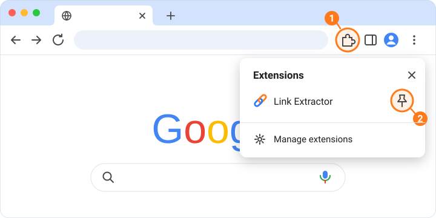
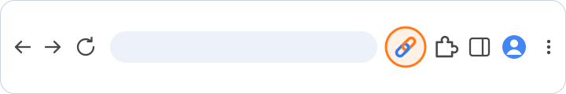
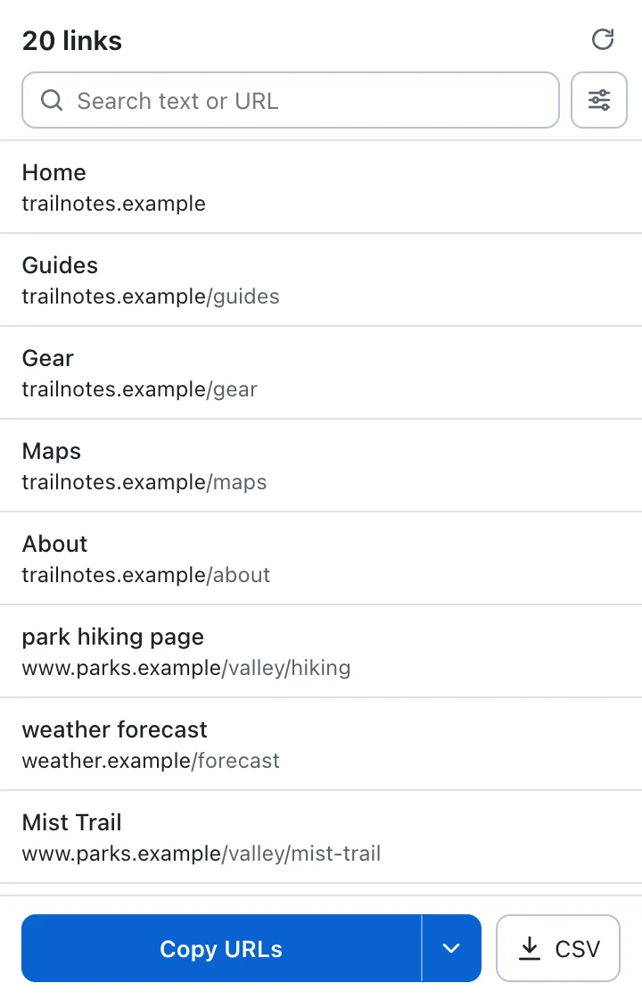
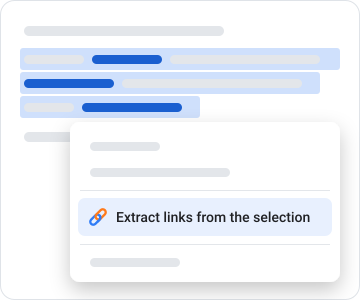

Link Extractor is installedLink Extractor is ready
Pin it to your toolbar so it's always one click away.
Get every link on a page as a clean list: full URLs, in page order, without duplicates.
- 1Click the puzzle icon in the top-right corner of Chrome.
- 2Click the pin next to Link Extractor.

Icon pinned to your toolbar Don't see it? Show how to pin it
How to use itHow to use it

-
1Open the link list
Open any other web page and click the Link Extractor icon. A side panel opens with all the links on the page.

-
2Find the links you need
Type in the search box to narrow the list, or click the sliders icon to open Filters & settings.

-
3Copy or download
Click Copy URLs to put the links on your clipboard, or CSV to download a file for Excel or Google Sheets.

-
4Only part of a page?
Select it, right-click, and choose Extract links from the selection.
